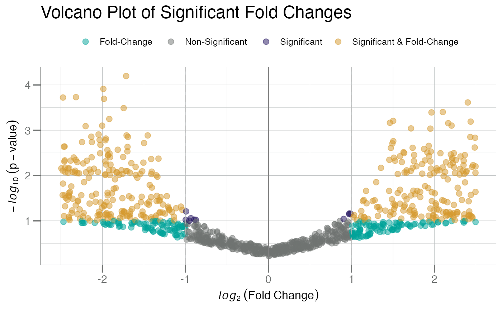

Create a volcano plot given a vector of log2-transformed
fold-changes (FC) and linear space p-values.
Usage
plotVolcano(
data,
FC,
p.value,
labels,
identify = FALSE,
fc.cutoff = 1,
pt.size = 2.5,
text.size = 3,
cutoff = 0.05/nrow(data),
main = NULL,
x.lab = NULL,
...
)Arguments
- data
A
data.frameobject containing at least two columns containing 1) log2-transformed fold-changes, 2) linear-space p-values. A third column containing point labels must be supplied, ifidentify = TRUE.- FC
An unquoted string identifying the column in
datacontaining a vectorlog2()-transformed fold-changes.- p.value
An unquoted string identifying the column in
datacontaining a vector of p-values.- labels
An unquoted string identifying the column in
datacontaining point labels, typically "Target" or "Analyte" names.- identify
Logical. Should significant points be identified?
- fc.cutoff
Placement for the cutoff for coloring points along the fold-change x-axis. Defaults to doubling in fold-change (
1).- pt.size
Numeric. The size for the points.
- text.size
Numeric. The size for the identifying text.
- cutoff
Horizontal statistical significance cutoff for coloring points. Defaults to Bonferroni corrected significance at
alpha = 0.05in "p-value" linear space[0, 1].- main
Character. Main title for the plot. See
ggtitle()forggplot2style graphics.- x.lab
Character. Optional string for the x-axis. Otherwise one is automatically generated (default).
- ...
Arguments passed to
geom_point().
See also
geom_point().
Other volcano:
plotVolcanoHTML()
Examples
withr::with_seed(101, {
fc1 <- sort(runif(500, -2.5, 0)) # Z-scores as dummy fold-changes
fc2 <- sort(runif(500, 0, 2.5)) # Z-scores as dummy fold-changes
p1 <- pnorm(fc1) # p-values for neg. scores
p2 <- pnorm(fc2, lower.tail = FALSE) # p-values for pos. scores
p <- jitter(c(p1, p2), amount = 0.1) # add noise
p[p < 0] <- runif(sum(p < 0), 1e-05, 1e-02) # floor p > 0 after jitter
df <- data.frame(fc = c(fc1, fc2), p = p)
})
plotVolcano(df, fc, p, cutoff = 0.1) # lower p-value cutoff

# add some random labels to `df`
df <- dplyr::mutate(df, pt_label = dplyr::row_number())
plotVolcano(df, fc, p, labels = pt_label, identify = TRUE, cutoff = 0.01)